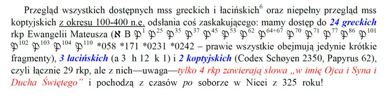
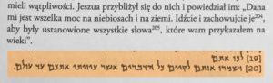

W Imię Ojca i Syna i Ducha Świętego – Mateusza 28:19
Czy Mateusza 28:19 to dowód na istnienie Trójcy?
W Ewangelii Mateusza 28:19 czytamy wg. Biblii Tysiąclecia:
“Idźcie więc i nauczajcie wszystkie narody, udzielając im chrztu w imię Ojca i Syna, i Ducha Świętego.”
Zwolennicy dogmatu o Trójcy czyli trynitarianie powołują się na ten tekst, jako na dowód istnienia Boga w trzech osobach. Główne ich argumenty to:
- Wymienienie Ojca, Syna i Ducha Świętego w jednym wersecie ma świadczyć o objawieniu się Boga w Trójcy.
- Zwrot “w imię Ducha Świętego” ma udowadniać osobowość Ducha Świętego z uwagi właśnie na użycie tu wyrażenia “w imię”.
Zbadajmy zatem te trynitarne „argumenty„ w oparciu o Pismo Święte
Mówiąc kolokwialnie argument oparty na „ wyliczance” i „wspólnym występowaniu w danym fragmencie trzech definicyjnych elementów Trójcy Świętej”, tak naprawdę NICZEGO NIE DOWODZI, czy też nie udowadnia!
Definicja trynitarnego dogmatu podkreśla „ równość co do mocy i współwieczności”, a z tego tekstu bynajmniej to nie wynika.
Dlaczego tak uważamy? Zobacz dla przykładu Dzieje Apostolskie 3:13. Czy wymienieni tu w jednym wersecie: Abraham, Izaak i Jakub są sobie równi co do mocy i współwieczności? W wielu wersetach biblijnych te trzy osoby występują razem. Czy upoważnia nas to do wyciągnięcia wniosku, że tworzą coś innego niż trzy odrębne osoby?
A co wynika z 1 Jana 5-8? Czy fakt istnienia „trzech świadków”: Ducha, wody i krwi … zgodnie poświadczających to, iż Jezus Chrystus jest Synem Bożym i Mesjaszem- to dowód na „ równość co do mocy i współodwieczność „ Ducha, wody i krwi …? Co ciekawe postawienie w roli „świadka” – krwi i wody …. nie dowodzi ich osobowości! Również to, że poświadczają nie dowidzi ich osobowych bytów.
Wręcz przeciwnie. Dowodzi to faktu często występującej w Biblii personifikacji (przypisania osobowych cech i działań w odniesieniu do krwi czy wody).
Jakie imię
Trynitarze zapominają, że wykonać coś “w czyimś imieniu” może znaczyć tyle co zwrot “w imię czego mam to zrobić”, dla przykładu “w imię naszej wspólnej przyjaźni cię proszę”. Czy mówiąc ” w imieniu prawa cię aresztuję” – udowadniamy istnienie jakiejś osoby o imieniu: „prawo” . Czy raczej podkreślimy fakt działania w autorytecie, na mocy obowiązującego prawa?
Pismo święte podaje przykłady takich zwrotów chociażby w Jana 5:43 (BW) gdzie czytamy :
“Ja przyszedłem w imieniu Ojca mego, a wy mnie nie przyjmujecie; jeśli kto inny przyjdzie we własnym imieniu, tego przyjmiecie”
Podobnie czytamy w 2 do Tesaloniczan 3:6 (BW)
“Nakazujemy wam, bracia, w imieniu Pana Jezusa Chrystusa, abyście stronili od każdego brata, który żyje nieporządnie, a nie według nauki, którą otrzymaliście od nas. “
Jeżeli przyjmiemy, że zwrot “w imię” dotyczy konkretnego imienia danej osoby to rodzi się pytanie jakie imię ma Duch Święty? Jak możemy chrzcić w imię Ducha, … nie znając tego imienia?
Pismo Święte podaje imię Ojca – JHWH, imię Syna – JESZUA, ale nigdzie nie spotykamy imienia rzekomej osoby Ducha Świętego. Czy to nie byłoby dziwne, że jeden Bóg zakładając istnienie Trójcy objawia setki razy dwa imiona czyli Ojca i Syna, a ani razu nie objawia imienia Ducha Świętego?
Wyjaśnić tu warto, że określenia „ pocieszyciel” itp. zwroty , nie stanowią imienia własnego Boga chociaż zwolennicy Trójcy próbują taką opinię forsować. Jest to tylko określenie podobnie jak „stwórca” czy “dobry pasterz” (o rzekomym imieniu “paraklet czy “parakletos” piszemy we wpisie “Pocieszyciel z Jana 16:26“).
Warto zobacz co na temat imienia podaje słownik Biblii Tysiąclecia. Pod hasłem “imię”, cytuje fragment:
“to co w czasach starożytnych nie posiadało imienia …. nie istniało….” (oczywiście jako osoba).
Czy z kontekstu Mateusza 28:19 wynika, że Pan Jezus chciał objawić uczniom Boga w trzech osobach?
Nie. Pan Jezus nie mówi do uczniów, że objawi im teraz naturę Boga, nie mówi że objawi im Boga w trzech osobach, ale nawołuje do wyruszenia w świat by nauczać oraz udzielać chrztu. To jest główne przesłanie wynikające z tego fragmentu. Poświadcza to końcowy 20 werset “Uczcie je zachowywać wszystko, co wam przykazałem. A oto Ja jestem z wami przez wszystkie dni, aż do skończenia świata” (Mateusza 28:20 BT). Kontekst wyraźnie wskazuje, że Jezus nie porusza tu istoty Boga ale zleca uczniom pewne zadanie do wykonania.
Jak zatem należy rozumieć zwrot “w imię“. Zobaczmy co mówi na ten temat Słowo Boże w innych wersetach. Dla przykładu przeczytajmy Jana 10:25 (BW)
“Odpowiedział im Jezus: Powiedziałem wam, a nie wierzycie; dzieła, które ja wykonuję w imieniu Ojca mojego, świadczą o mnie; ”
Czy chodzi tutaj o imię osobiste Boga czy raczej o to, że Jezus występował w imieniu swojego Ojca? Niech każdy sam sobie na to pytanie odpowie.
Czy końcówka z Mateusza 28:19 to formuła chrzcielna czy trynitarna
Jak widać nie można wykorzystywać omawianego fragmentu jako dowodu na istnienie Trójcy Świętej, jak również wbrew faktom nazywać pewne zwroty „formułą trynitarną”.
Jak powiedzieliśmy powyżej, z kontekstu absolutnie nie wynika jakoby ten fragment dotyczył objaśniania uczniom troistej natury Boga.
Czy nie dziwi Cię to, że tak ważny fragment pojawia się tylko raz w czterech ewangeliach? Co ważne i ciekawe w Dziejach Apostolskich takiej formuły się również nie stosuje, gdyż chrztu udzielano w imię Jezusa co przyznano nawet w przypisie do Mateusza 28:19 w Biblii Jerozolimskiej z 2006 roku.
{kind=link}
Przypis do Mateusza 28:19
Zwróćmy uwagę na zadnie – Wiadomo, że Dz mówią o udzielaniu chrztu “w imię Jezusa“. Czy nie dziwi cie to, że NIGDZIE w Piśmie Świętym NIKOMU nie udzielono chrztu posługując się tą formułą nakazaną rzekomo przez Chrystusa? Jeżeli Jezus przed wniebowstąpieniem, nakazał chrzcić wszystkie narody w “Imię Ojca i Syna i Ducha Świętego”, to dlaczego apostołowie i uczniowie się do tego nakazu nie stosowali? Zwróćmy uwagę na Dzieje Apostolskie 2:38 (BW):
“A Piotr do nich: Upamiętajcie się i niechaj się każdy z was da ochrzcić w imię Jezusa Chrystusa na odpuszczenie grzechów waszych, a otrzymacie dar Ducha Świętego. “
Dlaczego Piotr nie powiedział w dniu pięćdziesiątnicy “niechaj się każdy z was da ochrzcić w imię Ojca i Syna i Ducha Świętego“?
Podczas wizyty u Korneliusza Piotr również nie nakazał chrztu w imię Ojca i Syna i Ducha Świętego. W Dziejach Apostolskich 10:47,48 (BW) Piotr “… rozkazał ich ochrzcić w imię Jezusa Chrystusa. …” (zobacz również Dzieje 8:12 oraz Dzieje 19:5)
Czyżby formuła chrzcielna z Mateusza 28:19, była apostołom nieznana?
Możliwe, że wszystkie Tobie znane przekłady zawierają zwrot “w imię Ojca i Syna i Ducha Świętego”. Poniżej zebrane przez Pana Grzegorza Kaszyńskiego przekłady, które tej końcówki jednak nie zawierają:
Przekłady Mateusza 28:19 z krótszym zakończeniem
Czy ten fragment jest oryginalny?
Niektórzy kwestionują autentyczność Mateusza 28:19. W książce Komentarz Żydowski do Nowego Testamentu, David Sytern, Vocatio 2005r. w komentarzu do Mateusza 28:19 napisano:
{kind=link}
Komentarz do Mateusza 28:19 strona 129, przypisy
Rozstrzygnięcie dylematu czy ten tekst jest czy nie jest autentyczny pozostawiamy naszym czytelnikom. Niemniej dla pełnego obrazu, chcemy przedstawić również argumenty osób uważających, że powyższa argumentacja z tego wpisu nie ma sensu, gdyż omawiany fragment jest tylko późniejszą wstawką kopistów.
Dla przeciwników autentyczności tych słów zastanawiające jest np., że Euzebiusz w wielu swoich pismach cytuje ten tekst, bez tzw. formuły chrzcielnej i kilkakrotnie pomija końcową część wersetu 19. Uważają, że Euzebiusz, nie znał nakazu chrztu w imię “Ojca, Syna i Ducha Świętego” a jedynie w imię Jezusa. Poniżej cytat z „Historia Kościoła” III,
„Inni wreszcie apostołowie, narażeni na tysiączne zasadzki na swe życie, opuścili ziemię żydowską i wyruszyli na opowiadanie i nauczanie do wszystkich narodów, pełni mocy Chrystusa, który rzekł do nich: ‘Idźcie i nauczajcie wszystkie narody w Imię Moje’”
I jeszcze jeden fragment z Euzebiusza (Demonstratio Evangelica col. 240, str 136)
“Ponieważ On nie nakazał im “czynić uczniami wszystkie narody” ot tak po prostu, bez uprawomocnienia i kwalifikacji, ale z istotnym dodatkiem “w Jego imię” … Jest zatem rzeczą słuszną, że Jezus podkreślił moc ukrytą w Jego imieniu, ale zakrytą dla wielu, i dlatego powiada do apostołów “Idźcie, czyńcie uczniami wszystkie narody w imię moje“”.
Co mówią manuskrypty?
Ci którzy uważają słowa z Mateusz za nieautentyczne zwracają również uwagę na to, że niektóre manuskrypty greckie Ewangelii Mateusza, pochodzące sprzed IV wieku (tzw. przed nicejskie) nie posiadają końcowych słów z rozdziału 28. Możemy tu wspomnieć o tekście synaicko-syryjskim, który nie posiada tego zakończenia, a który kończy się na Mt 28:16. Podobnie brak jest fragmentu od Mt 28:15 do Mk 1:17 w greckim kodeksie „C” (Efrema).
W sumie na 29 rękopisów, tylko w czterech (Kodeks Watykański, Synaicki, Codex Vercellensis, Kodeks Schøyen 2650) znajdujemy słowa: „w imię Ojca i Syna i Ducha Świętego”. Podkreślmy, że te kopie zostały sporządzone po soborze w Nicei po roku 325.
Pan Grzegorz Kaszyński w swoim opracowaniu o wersecie z Mateusza 28:19 zauważa jak poniżej.
Te 4 manuskrypty “ponicejskie” to jak pisaliśmy: Kodeks Watykański (język grecki), Kodeks Synaicki (język grecki), Codex Vercellensis (język łaciński) i Kodeks Schøyen 2650 (język koptyjski).
{kind=link}
Za zgodą Pana Grzegorza Kaszyńskiego udostępniamy pełne opracowanie na temat Mateusza 28:19 z dzieła Szem-Toba:
Krótki logion Mateusza 28:19,20 w hebrajskiej Ewangelii według Mateusza z dzieła Szem-Toba
W jakim języku napisał Ewangelię Mateusz?
Wcześni historycy jak Papiasz, Orygenes, Euzebiusz, czy Hieronim w swoich opracowaniach wspominają o istnieniu Ewangelii Mateusza napisanej po hebrajsku. Dla przykładu Papiasz napisał, że “Mateusz zebrał wyroki w języku hebrajskim, a każdy przetłumaczył je najlepiej jak umiał”.
Czy taki tekst w języku hebrajskim się zachował? Tak. Dostępnych jest 10 rękopisów od Szem Towa, który ten tekst zawiera. W Polsce możemy tekst hebrajski oraz jego tłumaczenie znaleźć w książce “Ewangelia Św. Mateusza po hebrajsku”,wydawnictwo Petrus 2017 r. Z języka hebrajskiego na polski przetłumaczył tekst Eliyazar Ben Miqra. Poniżej interesujący nas fragment:
Wcześniej przez wiele lat naukowcy sądzili, że jest to tłumaczenie na hebrajski greckiego manuskryptu. W roku 1987 George Howard udowodnił niezbicie, że Ewangelia od Szem Towa nie jest tłumaczeniem, ale tekstem napisanym po hebrajsku! Jak widzimy kontrowersyjnych słów z Mateusza 28:19 nie ma w tym hebrajskim tekście.
Co zastanawiające, Atanazy, Ojciec Kościoła z IV wieku, wielki zwolennik Trójcy, który próbował dowodzić z Pisma Świętego jej istnienie, również nie powołał się na tekst z Mateusza 28:19!
Dlaczego Atanazy nie wykorzystuje tego fragmentu w swojej argumentacji. Fragmentu, który jest dzisiaj koronnym argumentem dla wielu zwolenników Boga w trzech osobach?
Może dlatego, że tego tekstu nie znał? W książce VORGRIMLER, Sacramental Theology (str. 102,106), zauważono:
“Istnieją dwie wypowiedzi Jezusa dotyczące chrztu, jednak obie nie są sformułowaniami pochodzącymi od samego Jezusa, tylko reprezentują późniejszy etap rozwoju, tj. Mateusza 28:19, które wyraźnie powstało pod wpływem liturgii i Marka 16:16 z nieoryginalnego zakończenia Ewangelii Marka z drugiego stulecia. (…) Późniejsze rozszerzenie — „w imię Ojca i Syna i Ducha Świętego” (Mat 28:19) — jest trynitarnym rozwinięciem chrystologicznego wyznania.”
Sobór w Nicei a Mateusza 28:19
Nawet trynitarze zdają sobie sprawę, że to, co uchwalono na soborze w Nicei miało ogromny wpływ na późniejszy rozwój chrześcijaństwa. Wpływ na pisane teksty poprzez nacisk ze strony hierarchów kościelnych, czy nawet samego Konstantyna. Z tego co nam wiadomo po soborze w Nicei, Konstantyn dla potrzeb kościoła zamówił sporządzenie pięćdziesięciu egzemplarzy Biblii, które to mieli przepisywać “najlepsi” ówcześni kopiści pod kierunkiem Euzebiusza z Cezarei (podobno Kodeks Watykański i Synajski to ich dzieło).
Przykładem prób “potwierdzenia” dogmatu o Trójcy poprzez nieautentyczną “wstawkę” może być 1 Jana 5:7. W przekładzie Biblii Gdańskiej próbowano “przemycić” poniższy tekst:
„Gdyż trzej są Ci, którzy świadczą w Niebie: Ojciec, Słowo i Duch Święty; a Ci trzej są jednym”
Jak pisaliśmy w artykule “Ci trzej są jednym.
“Historię tej wstawki przedstawił B. Metzger w dziele A Textual Commentary on the Greek New Testament (1975, ss. 716-718), gdzie wyjaśnia, iż po raz pierwszy pojawiła się w traktacie Liber apologeticus z IV w., a od VI w. występuje w odpisach Wulgaty i starołacińskich przekładów Biblii.”
W przypisie do tego wersetu katolicka Biblia Tysiąclecia wyd. IV przyznano co do tych słów, że:
„brak w najstarszych rękopisach gr. i w najstarszych przekładach. Nie spotykamy ich również w ważniejszych kodeksach Wulgaty. Prawdopodobnie stanowiły one marginesową glosę, później w niektórych kodeksach włączoną do tekstu”.
Obecnie (poza Biblią Gdańską starą i nową) wszystkie znane nam nowsze tłumaczenia uznają te słowa za nieautentyczne i nie zamieszczają ich w tekście głównym.
Wnioski
Jak byśmy na omawiany tekst nie spojrzeli, to trudno zgodzić się z opinią, że jest on jednoznaczny, jak również jak wielu twierdzi “przygniatający”.
Jeżeli uznamy, że fragment z Mateusza 28:19 jest autentyczny to i tak budzi on duże wątpliwości interpretacyjne. Analizując ten fragment warto zadać sobie pytania:
- Czy uczniowie Jezusa, w tym apostołowie, chociaż raz ochrzcili kogoś używając słów “Chrzczę cie w imię Ojca i Syna i Ducha Świętego“, czy raczej chrzcili w imię Jezusa Chrystusa?
- Czy fragment zwraca uwagę na osobiste imiona osób rzekomo wchodzących w skład Trójcy, czy raczej chodzi tu o podobny sens jak u Filemona werset 9 (KUL) „to jednak raczej proszę w imię miłości”
- Co mówi kontekst Mateusza 28:19? Czy wynika z niego, że Pan Jezus chciał objawić uczniom Boga w trzech osobach?
- Czy słowa z Mateusza 28:19 to rzeczywiście formuła trynitarna czy raczej chrzcielna? Jeżeli chrzcielna to dlaczego się do niej później nie stosowano?
- Czy z uwagi na fakt, że omawianego zwrotu nie znajdujemy w manuskryptach pisanych przed soborem w Nicei nie czyni tego tekstu niepewnym?
Wnioski jak również przemyślenia pozostawiamy naszym czytelnikom.
kopia strony: https://blog.antytrynitarianie.pl/imie-ducha-mateusza-28-19 Wszelkie prawa autorskie należą się autorowi tej strony
e664e8cd72